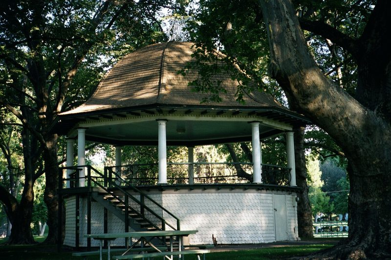

Written comment · Council packet, Oct 14, 2026, pp. 1095–1106
Matt Heuer
Government Affairs Director · Walla Walla Valley Association of REALTORS
- To
- City of Walla Walla City Council
- Re
- 2026 Critical Areas Ordinance Update, File PLN5-26-0001 - Technical, Legal, and Policy Concerns
In his words
“Decision-makers should be expressly told that 100 feet is a City policy choice informed by a WDFW recommendation, not a buffer width imposed by RCW 36.70A.172.”
Three points he raises
Summarized by CreekChecker
A policy choice, not a state width
Argues state law requires using best available science, not any particular width, and that labeling 100 ft 'State Mandated' blurs that distinction.
Pages 3–4No alternative widths tested
Says the City's only technical study (Facet, July 1) maps the footprint of 100 ft but never tests 60 ft, 75 ft, or reach-by-reach alternatives.
Pages 4–5, 10–11Pause, and show the work
Asks Council to pause adoption, get written Commerce guidance on the Dec. 31 deadline, commission a reach-by-reach analysis, and 'Show the work'.
Pages 11–12
Perspectives from the community
Citizen comments.
Read the concerns, follow the sources, and form your own view. Start with this memorandum addressed to the Walla Walla City Council.

Featured memorandum
James K. Hayner
Attorney · Minnick Hayner ↗
In his words
Three points he raises
Summarized by CreekChecker
Science that fits local conditions
Hayner urges the City to develop scientific evidence specific to the local area before settling on its approach.
Pages 1 and 3Clear answers for existing homes
He raises questions about additions, ADUs, rebuilding after a fire, and how long grandfathered rights would remain.
Page 2Housing and property impacts
He argues that the proposed buffer conflicts with the City’s goals for infill, greater density and affordable housing.
Pages 2–3Your experience belongs in the discussion. Use your own words to explain what you want the Council to consider.
How to send your own comment →